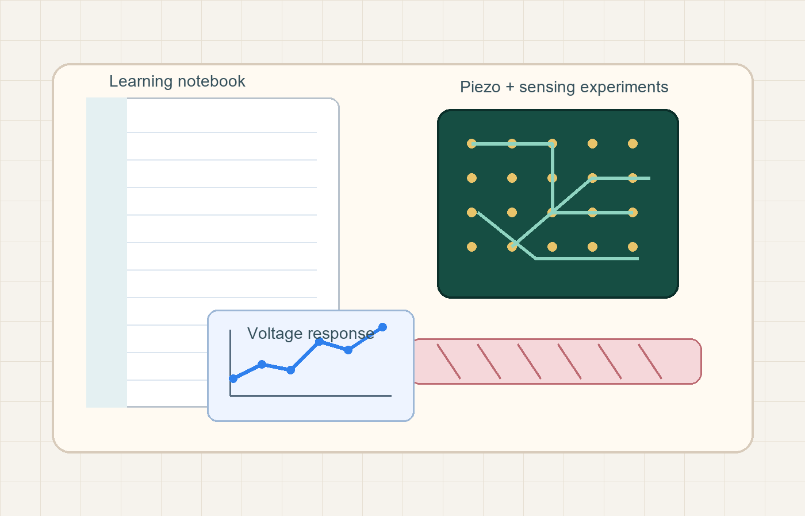

Flexible piezoelectric materials
Rubber composites, ceramic fillers, poling, dielectric behavior, and electromechanical response.
Mechanical engineering researcher in progress
I am interested in flexible piezoelectric materials, energy harvesting, sensing systems, experimental data, and the small engineering decisions that turn an idea into something measurable.

About me
I am a mechanical engineering master's student working around flexible piezoelectric rubber composites, energy harvesting, dynamic sensing, and experimental automation. This website is my personal space to collect what I am learning, what I have built, and what I want to understand more deeply.
My direction is practical: fabricate samples, measure signals, compare circuits, analyze data, and explain the result clearly enough that another student can follow it.
What I am learning
Rubber composites, ceramic fillers, poling, dielectric behavior, and electromechanical response.
Voltage output, load resistance, rectifier circuits, capacitor charging, and power evaluation.
Dynamic signals, sensor calibration, peak detection, stability windows, and Python analysis.
Arduino, LabVIEW, motor control, serial communication, and repeatable measurement workflows.
Academic and working experience
Master's research
Researching materials and systems for energy harvesting and sensing, with attention to characterization, output measurement, and usable power.
Laboratory work
Organizing experiment data, reading voltage/time files, extracting peaks, comparing performance, and building summaries for research decisions.
Engineering tools
Building simple interfaces and scripts that make testing easier, including serial control, plotting, and signal processing.
Portfolio
Research
Flexible composite samples tested under mechanical excitation to understand voltage response, power output, and energy storage behavior.
Knowledge note
A practical guide for converting voltage data into peak-to-peak voltage, RMS voltage, average power, and harvested energy.
Read the noteInterface
Serial communication between LabVIEW and Arduino for hardware control and future experimental acquisition workflows.
View projectData analysis
Python scripts for reading LVM/CSV files, extracting stable windows, calculating peaks, and comparing samples across test conditions.
Why I write
I want the blog to be more than announcements. It will be a place where I explain the concepts I am learning: how to calculate energy from voltage, how circuits affect piezoelectric output, how to read experimental files, and how to make data easier to trust.
Open the blog indexContact
Replace the email placeholder with your preferred contact address when you are ready.